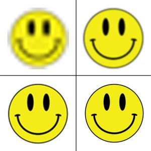

Afbeeldingen en geluidsbestanden die veel details bevatten, nemen heel veel opslagruimte op. Dus bijvoorbeeld je harde schijf gaat dan snel vol en het kost dus ook veel tijd om die bestanden te downloaden. Om deze problemen op te lossen bestaat bestandscompressie. Hiermee wordt de bestandsgrootte van bijvoorbeeld video of muziek verkleind, opslag raakt dan ook veel minder snel vol. Bestanden worden dan ook sneller gedownload. Er zijn twee verschillende soorten bestandscompressie. 1. Lossy compression 2. Lossless compression
Bij Lossy compression wordt informatie van het originele bestand verwijderd en hierdoor wordt het bestand kleiner. Stel je voor dat je een foto maakt van de lucht die uit 50 verschillende tinten blauw bestaat. De verschillen in die tinten zijn dan vaak niet te zien door het menselijk oog. Door die tinten te verwijderen dan wordt het bestand een stuk kleiner. Het plaatje wordt wel een beetje een slechtere kwaliteit, zoals je ziet in het plaatje hieronder. De onderste twee plaatjes lijken heel erg op elkaar, terwijl er al een heel veel is vervangen. Bij de bovenste twee zie je dat ze nog verder zijn gegaan met informatie verwijderen en is het uiteindelijk heel wazig geworden.
Bij lossless compression wordt de originele kwaliteit niet beïnvloed. De inhoud wordt op een veel efficiëntere manier opgeslagen. Als een plaatje bijvoorbeeld 4 pixels naast elkaar heeft die allemaal de waarde 36 heeft, dan wordt het als (4,36) opgeslagen en normaal zou het (36,36,36,36) zijn. Dus neemt het veel minder opslag in. Nog een voordeel is dat je bij lossless compression het bestand weer kan terugdraaien naar het origineel, dat kan niet bij lossy compression.
Hier is nog een extra uitleg video over het vershcil tussen lossy en lossless compression.